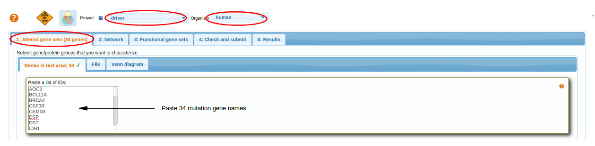

How to evaluate driver roles of candidate disease genes?
The idea of network-based functional analysis is in assuming that multiple genes involved in the disease would appear connected in the global network. Hence we should formulate gene-specific requests so that the answers confirm or reject respective hypotheses. The analysis is most applicable to cancer mutations (because of their abundance), but can well be applied to other diseases where candidate genes were derived in GWAS etc. Example applications can be found in Merid et al., 2014
(cancer driver genes) and Bennet et al., 2011, Hong et al., 2010, Reynolds et al., 2010 (Alzheimer's disease).
- Investigate roles of point mutations in Glioblastoma
- Select Network
- Select Functional genesets
Investigate roles of point mutations in Glioblastoma Multiforme
As an example, we investigate roles of point mutations in one somatic genome of glioblastoma multiforme. We start by pasting the whole list of 34 mutations in the first tab Altered gene sets -> Genes -> Paste a list of IDS. Although, each gene is going to be analyzed separately (submitting the list would just save time).
Note: You can also submit them as a text file, e.g. this one and select mutations for particular cancer genome (column 3).

Select Network
Select a network. For more details go through: Select Network
top
Select Functional genesets
Select functional gene sets. For more details go through: Selecting Functional Genesets.
There are two major modes in the analysis that can be run separately or in parallel. We can evaluate connections between a given candidate gene and a group of genes that together are likely to be implicated in the disease. Such a group can be either:
- A set of altered genes discovered experimentally (typically the whole set of mutations, genetic variants, or differentially methylated or expressed genes)
- A curated gene set with well characterized functional role in the disease
Scenario1
A set of altered genes discovered experimentally (typically the whole set of mutations, genetic variants, or differentially methylated or expressed genes)
For this scenario; we ask which of the genes manifest enriched network connectivity to their fellow mutations. In order to do that, we paste the same list in the tab 3 "Functional gene sets". The collection of FGS menu is unselected.
Check and Submit
We do not know in advance which genes would interact with which. Furthermore, we want to evaluate individual genes relations to the whole set of mutations. For these reasons, we check the box "Analyze AGS genes/proteins individually" and do not check the other box (or vice versa -it does not matter in this case).
For more details go through Check and Submit
Results
We see few genes from our AGS list (like MAPK9,NTRK1,TNK2...) appear significantly connected to the fellow mutations (in the given network).
Scenario2
A curated gene set with well characterized functional role in the disease
Following scenario 2, we investigate how the genes relate to known pathways. For cancer applications one can utilize the group of 42 database-and publication-based cancer pathways "CPW_collection". Similarly to scenario 1, we use checkbox "Analyze AGS genes / proteins individually" at the next tab.
This gives many more findings than scenario 1 which is mostly due to using many more sets of much better characterized genes. However this approach requires a control analysis: how many such findings would be made for a randomly picked gene set of size 34?
Results
Thus, stronger evidence was accumulated in the both scenarios for MAPK9 and a few other genes scored high against multiple cancer pathways (e.g. PRKDC,TNK2). However a full-scale statistical framework should be implemented for a systematic analysis of multiple cancer genes and genomes. Examples can be found in Merid et al., 2014 and might require additional information from the same samples (methylation, copy number events etc.). Required software in R and/or perl can be downloaded from CRAN
top